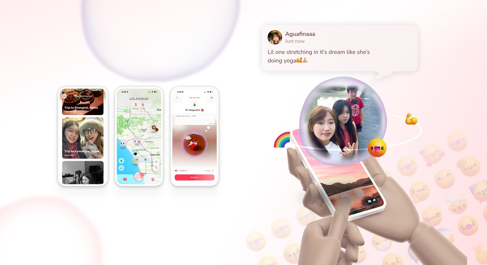
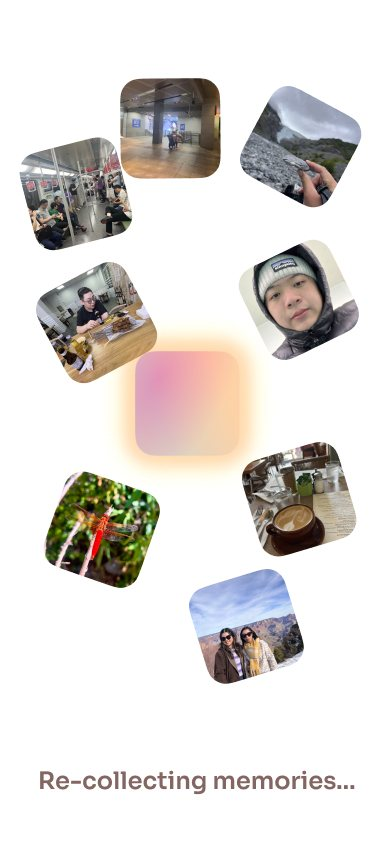
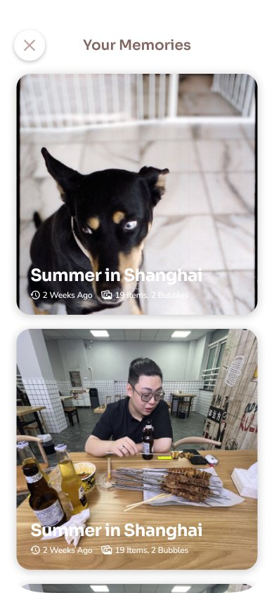
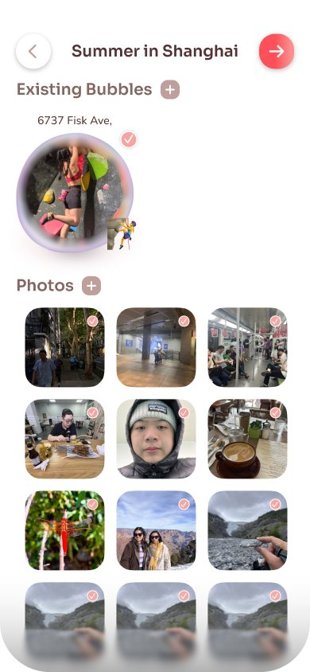
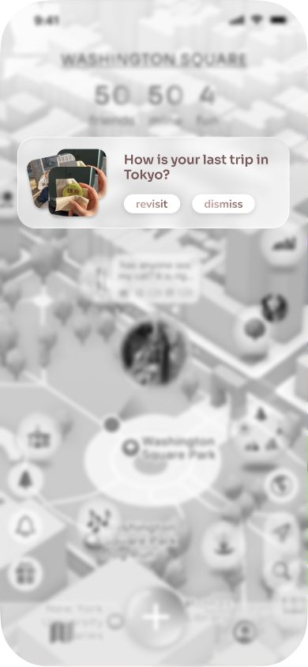
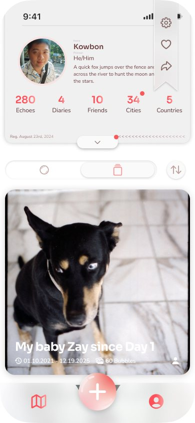
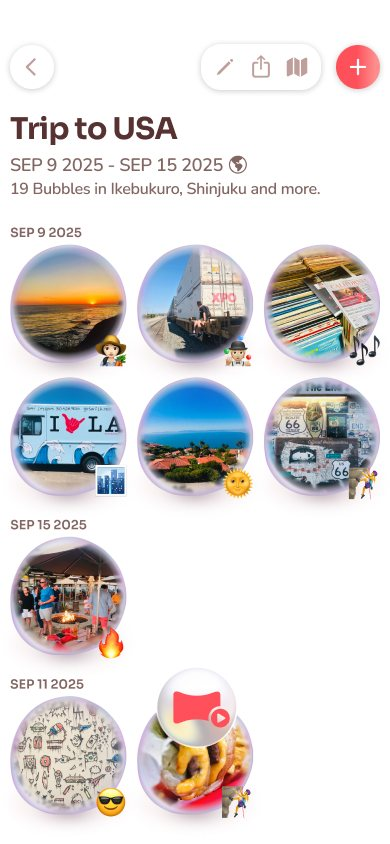
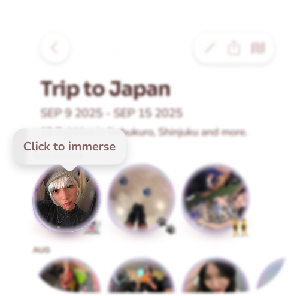
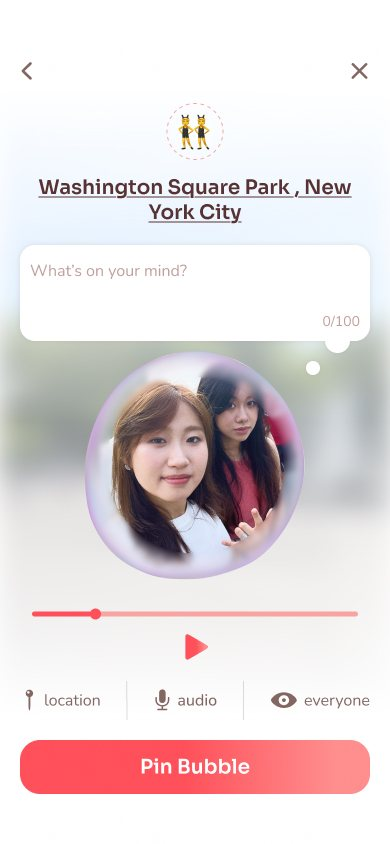

Selected work / AAKO · Chapter II / Product thinking
A place for memories.
Not a stage.
Reframing & mobile redesign
Reframing AAKO from a spatial social app into a spatial memory system—built around the people, places, and imperfect moments worth returning to.

A compelling spatial idea, a disappointing launch.
AAKO began as a location-based social platform: leave a memory as an Echo in the place it happened, and let people encounter it through AR. I had designed Echo; Jinmao designed the original mobile experience around it.
After the first launch fell short of expectations, I reframed the product and redesigned the mobile experience—albums, visibility, navigation, and onboarding—around that same Echo.
A compelling spatial idea did not become a reason to return.
Usage was weaker than expected: people were reluctant to engage, and many left during onboarding. The research was post-hoc—I worked backwards from launch data and observed behavior to find where the experience broke down. Three things stood out.
People will want to share in place.
Our team was comfortable sharing everyday life, so we expected people to place memories in the world and let others respond.
Presence felt intrusive.
In a spatial product a comment carries presence: someone finding your memory at a real place can feel intrusive, not welcoming.
A full AR tour will teach the product.
A strong, step-by-step AR introduction would show people how everything works before they start.
Too much, too soon—people left.
It asked for too much before anything felt personal, and some devices weren’t supported. Analytics showed people leaving there.
One Echo can hold a memory.
A single bubble—image, sound, and text—would be enough to carry a moment on its own.
A memory doesn’t live alone.
One Echo had to carry a whole memory by itself. Memories belong to a trip, a season, a place, or a stretch of time—and a lone post gave people little reason to return.
The memories worth keeping were often the least “postable.”
A meaningful memory might be an awkward photo of a friend, an ordinary video, or a private joke. Its value comes from a relationship and a context, not from how it performs in public.
Asking “public or private?” every time turned saving into an audience decision. So I reframed the experience around the user and their closest friends: a clear, trusted context where sharing an imperfect moment feels natural.
How might a memory stay connected to the people, places, and moments it belongs to?
From spatial social app to spatial memory system.
Echo stayed the smallest unit. What changed was everything around it—and each problem got an answer:
Before and after
Spatial social app
How do people share an Echo?
Posting, sharing, discovery
A single Echo
Four visibility layers
A guided AR introduction
Spatial memory system
How do people keep, connect, and return to meaningful moments?
Capture, context, revisiting, recollection
An album of Echoes
You and your closest friends
Start with your own memory
Four principles carried the reframe:
Intimacy before exposure
A clear sharing context for the closest circle; fewer decisions about who sees each moment.
Connections before isolated posts
Albums connect moments through place, time, people, and shared experience.
Personal meaning before instruction
Begin with something the user cares about; introduce spatial interaction once there’s a memory worth it.
Context before precision
Combine visual and environmental cues with meaningful time; don’t make every detail equally prominent.
From individual bubbles to an album of relationships.
The core change. An isolated bubble had to carry too much weight; in an album, moments build meaning together—a journey rather than unrelated posts. Place, season, people, and occasions connect them.
The album / How it’s made
AI suggests the events; you make them albums.
An album only works if it matches how people think about their lives—but sorting hundreds of photos by hand would bring back the burden the redesign was removing. So AI sorts memories into complete events, starting from whichever signal fits best:
A trip to Japan
Summer 2024
A holiday
Events read the way people talk—“A trip to Japan,” “Summer 2024”—not the way a camera roll stores them. AI does the sorting; the person decides what the event means and who it’s shared with.




The album / Where it lives
A way back to every album.
Albums need an entry point in everyday use, so people come back to them—not just make them once. On the home screen, a cue suggests an album to revisit (“How is your last trip in Tokyo?”); albums also live on your profile, and each opens into its moments.



The album / Where you start
Start with a memory, then invite interaction.
Onboarding used to demand a guided AR sequence before the product meant anything. Now it starts with creating an album from your own content.

Before
- Guided AR introductionStep by step, before anything personal
- Then, maybe, a memoryMany left before reaching it
After
- Your own contentCreate an album from moments you care about
- Shorter Echo creationCapture and context in fewer steps
- Spatial interactionOnce there’s a memory worth it
Everything else got smaller.
With the album at the center, the rest of the app was cut back to what supports it: fewer features, one audience, and fewer steps to make an Echo.
Change 01 / Scope
Centering the MVP.
Any feature that didn’t serve keeping and revisiting memories was cut; three new core features were added around the album.
Cut
Kept
New
Change 02 / Audience
Four layers became one trusted context.
The original experience had four visibility layers. I reduced them to one, simplifying home and navigation, so saving a memory stopped being an audience-management task.
The new layout cuts the clicks from three to one. Instead of opening a dropdown, picking a layer, and then switching to the grid, you tap the number you care about—50 friends, 13 mine, 4 fun—and land straight in those Echoes. The numbers and the information are right there on the map.
Change 03 / Echo creation
Seven steps became four.
Creating an Echo was cut down to three screens and a post: the details that used to take three separate steps now sit on one screen, with the emoji suggested automatically.

Before · 7 steps
After · 4 steps
A clearer purpose. An impact still to validate.
What changed
A specific direction: intimate memory keeping and recollection.
What I can—and cannot—claim
I can show the reasoning and the design work; I can’t claim a measured lift in retention or trust. Next: do people complete a first album, understand its audience, and come back on their own?
My biggest learning: a novel interaction is only valuable when it supports a human reason to use it.
Building Echo showed me what spatial media could do. Revisiting AAKO’s positioning made me ask what it should do.